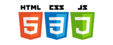

Year #1 of the CC republic. Officially founded by Greyson G. and cofounded by Risheen B. on October 29th, 2025
Total number of meetings : 21 (as of 5/13/2026)
Current location (as of 5/13/2026) : C208 Ms. Guttirez, upstairs 7/8th grade hallway
Original coding club sponsor for 2025-2026 was Ms. Guttirez. The current sponsor for 2025 - 2026 is Ms. Guttirez. We used python, C++, and html. Click on the button below to visit our manager site with all the coding club roles in the past years. This site is for people wanting to view and play projects of those made in coding club, or for people who want to learn more about what we do.
This page was made originaly by Greyson G. in visual studio code using HTML, CSS, and JavaScript.

Coding club is for those who are experienced in coding and want to show off their talent to peers or for people who are eager to go down the rabbit hole of software engineering in an extra-circular enviroment. If you are looking to join, listen on the anouncements or contact the current sponsor to get meeting dates. Once registering, you will become an official member and will be invited to the gmail group chat. The website may only be edited by members of the coding club concil being, President, Vice-President, or Secretary. Or you may receive permission. Elections for these positions may be held once every year in the first semester whenever one of the previous members of the concil decide to. More information on coding club may be posted here. If you have any questions please contact one of the members of the concil. Current concil members are listed on the coding club manager page with their details and email.
Down below are links to best projects for each year elected by the members.
2026 Python RPG game competion winner - Aaron E.
Popular games made by members
Bob OS
Coding club takes place on all school wednesdays from 4:00 pm to 5:00 pm unless there is a change.
Click here for all coding club meeting slideshows for 2025-2026 (current year)Resources and links to them are below. We use Programiz, and OnlineGDB for big projects where you can save your projects. We also recommend you watch Youtube tutorials if you're new.
End of page